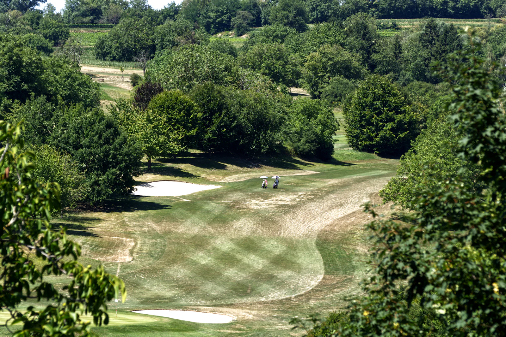
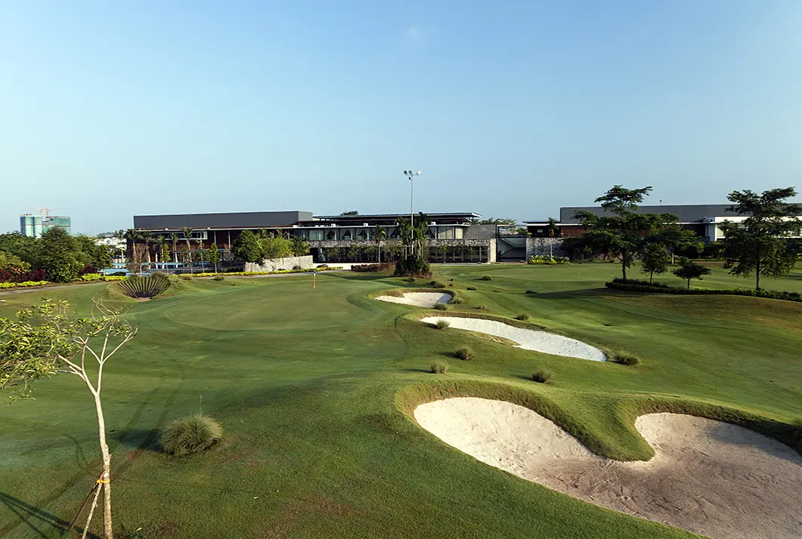
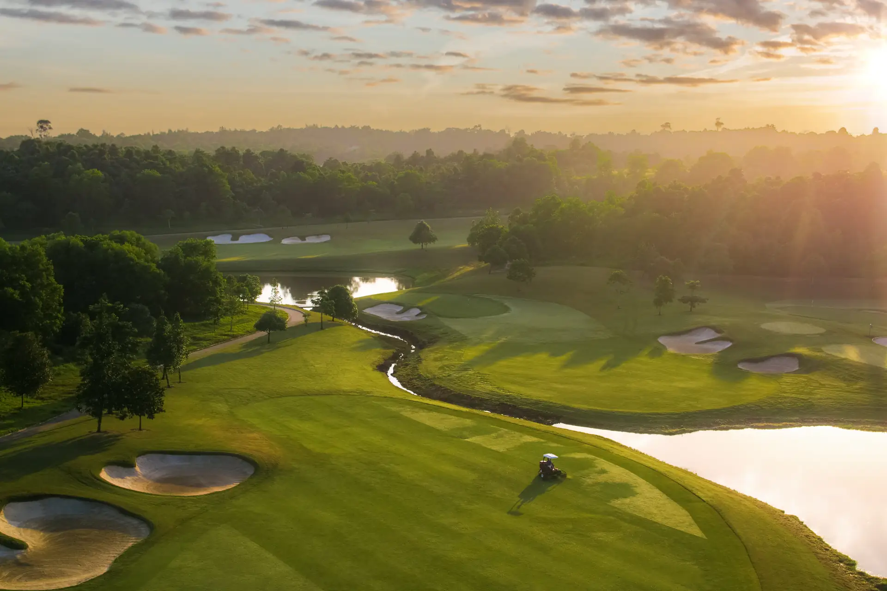
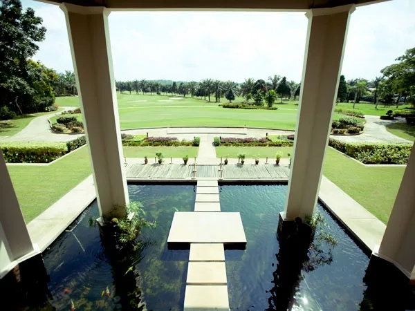
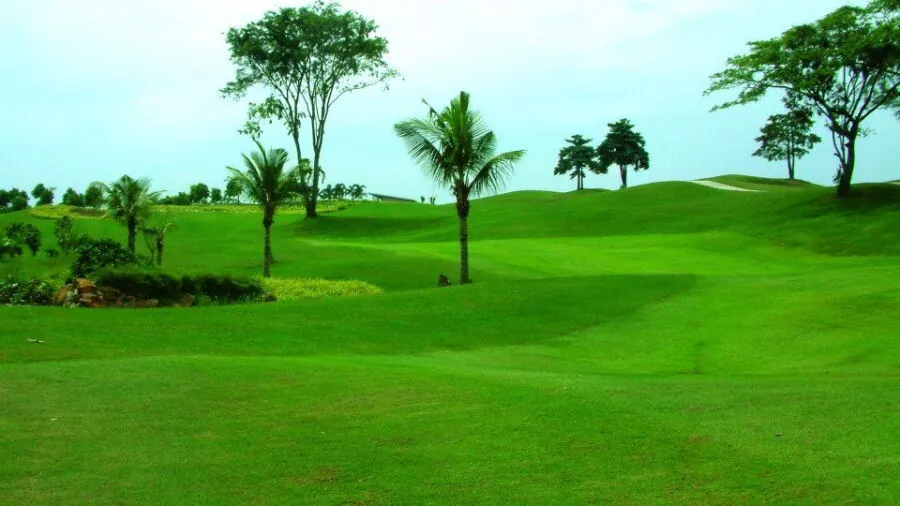

MALAYSIA · JOHOR BAHRU
조호바루 골프여행
싱가포르에서 다리 하나만 건너면 닿는 땅, 조호바루에는 세계적인 코스 디자이너의 손끝에서 태어난 그린과 울창한 열대 풍경이 조용히 자리 잡고 있다. 이 페이지는 이름만 나열하는 목록이 아니라, 조호바루를 대표하는 네 곳의 골프장을 직접 걸으며 담아낸 기록이다. 각 코스가 지닌 지형과 난이도, 그리고 그곳에서만 느낄 수 있는 순간들을 차례로 소개한다.

Horizon Hills Golf & Country Club
이스칸다르 푸테리에 자리한 파72 챔피언십 코스
2008년 문을 연 호라이즌 힐스는 호주 출신 코스 설계가 로스 왓슨(Ross Watson)이 누사자야의 완만한 구릉지를 그대로 살려 만든 18홀 파72 코스다. 넓게 트인 페어웨이와 달리 그린 주변은 정교한 벙커링과 워터 해저드로 촘촘하게 방어되어 있어, 티샷의 자신감과 어프로치의 정밀함을 동시에 요구한다. 이스칸다르 조호 오픈의 개최지로 선정될 만큼 코스 완성도에 대한 평가도 꾸준하다.
라운드가 끝난 뒤에도 머물고 싶은 곳이라는 점이 이 코스를 특별하게 만든다. 두 개의 수영장과 피트니스 센터, 여러 다이닝 공간을 갖춘 리조트형 클럽하우스는 골프 이후의 시간까지 촘촘하게 채워준다. 조호바루 도심에서 멀지 않으면서도 완전히 분리된 듯한 녹지 속 여유를 원하는 여행자에게 첫 번째로 추천하고 싶은 곳이다.
- 18홀 · 파72
- Ross Watson 설계
- 이스칸다르 조호 오픈 개최지
- 리조트형 클럽하우스

The Els Club Desaru Coast
사우스차이나해를 따라 펼쳐진 어니 엘스의 27홀 오션 코스
디자루 코스트 서안 17km에 걸친 리조트 지구 안에서, 엘스클럽은 어니 엘스가 직접 설계한 27홀 오션 코스와 비제이 싱과의 협업으로 완성된 18홀 밸리 코스를 함께 품고 있다. 오션 코스는 자연 습지와 호수를 끼고 굽이치는 완만한 구릉지를 따라 이어지며, 바다를 등지고 서는 홀마다 바람의 방향이 곧바로 전략을 바꿔 놓는다. 넓은 페어웨이가 주는 여유와, 그린을 지키는 벙커가 주는 긴장감이 홀마다 교차한다.
사우스차이나해를 정면으로 마주하는 몇몇 홀은 이 코스가 왜 말레이시아를 대표하는 골프 목적지로 꼽히는지 설명해 준다. 라운드 자체의 완성도뿐 아니라, 해변 리조트 단지 안에서 골프와 휴양을 한 번에 누릴 수 있다는 점에서 조호바루 골프 여행의 하이라이트로 삼기에 부족함이 없다.
- 오션 코스 27홀
- Ernie Els 설계
- 사우스차이나해 전망
- 디자루 코스트 리조트

Palm Villa Golf & Country Club
쿨라이에 자리한 27홀 리조트 코스
1998년 개장한 IOI 팜빌라는 미국 코스 설계가 릭 로빈스(Rick Robbins)가 만든 팜(Palm), 푸트라(Putra), IOI 세 개의 9홀 코스로 구성되어 있어, 27홀을 세 가지 조합으로 번갈아 돌 수 있다는 점이 가장 큰 특징이다. 코스마다 난이도와 성격이 조금씩 달라, 물이 많은 홀에서는 정교한 클럽 선택이, 트인 홀에서는 과감한 티샷이 필요하다. 클럽하우스 앞 연못과 정자에서 바라보는 페어웨이 전경은 라운드 전후로 잠시 머물고 싶게 만든다.
화려함보다는 편안한 리조트 골프를 원하는 이들에게 어울리는 곳이다. 드라이빙 레인지와 프로숍 등 기본기에 충실한 시설을 갖추고 있어, 실력을 다듬으며 여유 있게 하루를 보내기에 좋다. 조호바루 골프 여행에서 하루쯤은 속도를 늦추고 싶을 때 떠올릴 만한 코스다.
- 27홀 (Palm·Putra·IOI)
- Rick Robbins 설계
- 1998년 개장
- 리조트형 골프

Impian Golf & Country Club
세쿠다이의 짧지만 까다로운 9홀 퍼블릭 코스
2004년 문을 연 임피안(임피안 에마스) 골프장은 조호바루 시내에서 가장 가까운 대중 코스 중 하나다. 9홀뿐이지만 홀마다 형태와 공략 방식이 확연히 달라, 짧은 전장에 비해 체감 난이도는 결코 낮지 않다. 야자수와 완만한 능선이 이어지는 페어웨이는 무리 없이 걸을 수 있는 규모여서, 반나절 라운드로도 충분한 만족을 준다.
하루 종일 골프 일정을 비우기 어려운 여행자, 혹은 다른 코스에서의 라운드 전후로 몸을 풀고 싶은 이들에게 알맞다. 예약 부담이 적은 대중 코스라는 접근성과, 짧지만 손이 많이 가는 코스 설계가 만나 조호바루 골프 여행의 마지막 페이지를 가볍게, 그러나 알차게 채워준다.
- 9홀 퍼블릭
- 2004년 개장
- 조호바루 시내 인접
- 짧지만 까다로운 코스